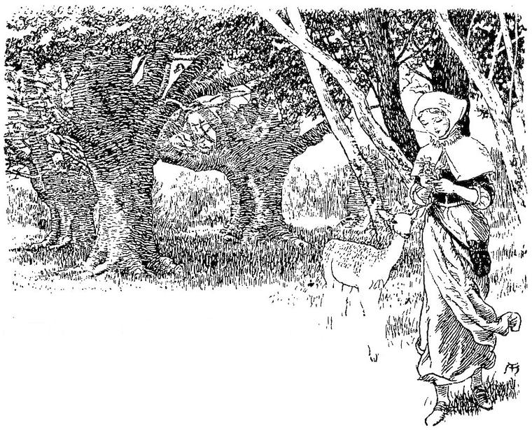
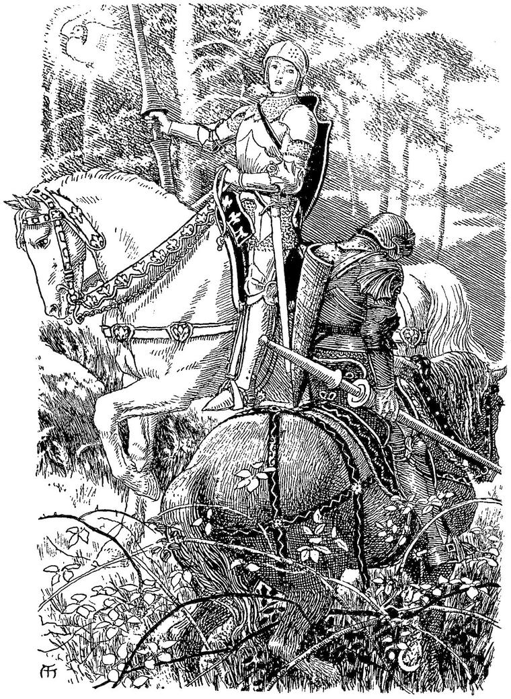
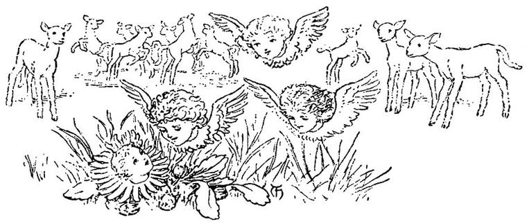

Stares thee, in rock, bush, river, in the face.
Never thine eyes behold a tree;
’Tis no sea thou seest in the sea,
’Tis but a disguised humanity.
To avoid thy fellow, vain thy plan;
All that interests a man, is man.”
HENRY SUTTON.
The trees, which were far apart where I entered, giving free passage to the level rays of the sun, closed rapidly as I advanced, so that ere long their crowded stems barred the sunlight out, forming as it were a thick grating between me and the East. I seemed to be advancing towards a second midnight. In the midst of the intervening twilight, however, before I entered what appeared to be the darkest portion of the forest, I saw a country maiden coming towards me from its very depths. She did not seem to observe me, for she was apparently intent upon a bunch of wild flowers which she carried in her hand. I could hardly see her face; for, though she came direct towards me, she never looked up. But when we met, instead of passing, she turned and walked alongside of me for a few yards, still keeping her face downwards, and busied with her flowers. She spoke rapidly, however, all the time, in a low tone, as if talking to herself, but evidently addressing the purport of her words to me.

She seemed afraid of being observed by some lurking foe. “Trust the Oak,” said she; “trust the Oak, and the Elm, and the great Beech. Take care of the Birch, for though she is honest, she is too young not to be changeable. But shun the Ash and the Alder; for the Ash is an ogre,—you will know him by his thick fingers; and the Alder will smother you with her web of hair, if you let her near you at night.” All this was uttered without pause or alteration of tone. Then she turned suddenly and left me, walking still with the same unchanging gait. I could not conjecture what she meant, but satisfied myself with thinking that it would be time enough to find out her meaning when there was need to make use of her warning, and that the occasion would reveal the admonition. I concluded from the flowers that she carried, that the forest could not be everywhere so dense as it appeared from where I was now walking; and I was right in this conclusion. For soon I came to a more open part, and by-and-by crossed a wide grassy glade, on which were several circles of brighter green. But even here I was struck with the utter stillness. No bird sang. No insect hummed. Not a living creature crossed my way. Yet somehow the whole environment seemed only asleep, and to wear even in sleep an air of expectation. The trees seemed all to have an expression of conscious mystery, as if they said to themselves, “we could, an’ if we would.” They had all a meaning look about them. Then I remembered that night is the fairies’ day, and the moon their sun; and I thought—Everything sleeps and dreams now: when the night comes, it will be different. At the same time I, being a man and a child of the day, felt some anxiety as to how I should fare among the elves and other children of the night who wake when mortals dream, and find their common life in those wondrous hours that flow noiselessly over the moveless death-like forms of men and women and children, lying strewn and parted beneath the weight of the heavy waves of night, which flow on and beat them down, and hold them drowned and senseless, until the ebbtide comes, and the waves sink away, back into the ocean of the dark. But I took courage and went on. Soon, however, I became again anxious, though from another cause. I had eaten nothing that day, and for an hour past had been feeling the want of food. So I grew afraid lest I should find nothing to meet my human necessities in this strange place; but once more I comforted myself with hope and went on.
Before noon, I fancied I saw a thin blue smoke rising amongst the stems of larger trees in front of me; and soon I came to an open spot of ground in which stood a little cottage, so built that the stems of four great trees formed its corners, while their branches met and intertwined over its roof, heaping a great cloud of leaves over it, up towards the heavens. I wondered at finding a human dwelling in this neighbourhood; and yet it did not look altogether human, though sufficiently so to encourage me to expect to find some sort of food. Seeing no door, I went round to the other side, and there I found one, wide open. A woman sat beside it, preparing some vegetables for dinner. This was homely and comforting. As I came near, she looked up, and seeing me, showed no surprise, but bent her head again over her work, and said in a low tone:
“Did you see my daughter?”
“I believe I did,” said I. “Can you give me something to eat, for I am very hungry?” “With pleasure,” she replied, in the same tone; “but do not say anything more, till you come into the house, for the Ash is watching us.”
Having said this, she rose and led the way into the cottage; which, I now saw, was built of the stems of small trees set closely together, and was furnished with rough chairs and tables, from which even the bark had not been removed. As soon as she had shut the door and set a chair—
“You have fairy blood in you,” said she, looking hard at me.
“How do you know that?”
“You could not have got so far into this wood if it were not so; and I am trying to find out some trace of it in your countenance. I think I see it.”
“What do you see?”
“Oh, never mind: I may be mistaken in that.”
“But how then do you come to live here?”
“Because I too have fairy blood in me.”
Here I, in my turn, looked hard at her, and thought I could perceive, notwithstanding the coarseness of her features, and especially the heaviness of her eyebrows, a something unusual—I could hardly call it grace, and yet it was an expression that strangely contrasted with the form of her features. I noticed too that her hands were delicately formed, though brown with work and exposure.
“I should be ill,” she continued, “if I did not live on the borders of the fairies’ country, and now and then eat of their food. And I see by your eyes that you are not quite free of the same need; though, from your education and the activity of your mind, you have felt it less than I. You may be further removed too from the fairy race.”
I remembered what the lady had said about my grandmothers.
Here she placed some bread and some milk before me, with a kindly apology for the homeliness of the fare, with which, however, I was in no humour to quarrel. I now thought it time to try to get some explanation of the strange words both of her daughter and herself.
“What did you mean by speaking so about the Ash?”
She rose and looked out of the little window. My eyes followed her; but as the window was too small to allow anything to be seen from where I was sitting, I rose and looked over her shoulder. I had just time to see, across the open space, on the edge of the denser forest, a single large ash-tree, whose foliage showed bluish, amidst the truer green of the other trees around it; when she pushed me back with an expression of impatience and terror, and then almost shut out the light from the window by setting up a large old book in it.
“In general,” said she, recovering her composure, “there is no danger in the daytime, for then he is sound asleep; but there is something unusual going on in the woods; there must be some solemnity among the fairies to-night, for all the trees are restless, and although they cannot come awake, they see and hear in their sleep.”
“But what danger is to be dreaded from him?”
Instead of answering the question, she went again to the window and looked out, saying she feared the fairies would be interrupted by foul weather, for a storm was brewing in the west.
“And the sooner it grows dark, the sooner the Ash will be awake,” added she.
I asked her how she knew that there was any unusual excitement in the woods. She replied—
“Besides the look of the trees, the dog there is unhappy; and the eyes and ears of the white rabbit are redder than usual, and he frisks about as if he expected some fun. If the cat were at home, she would have her back up; for the young fairies pull the sparks out of her tail with bramble thorns, and she knows when they are coming. So do I, in another way.”
At this instant, a grey cat rushed in like a demon, and disappeared in a hole in the wall.
“There, I told you!” said the woman.
“But what of the ash-tree?” said I, returning once more to the subject. Here, however, the young woman, whom I had met in the morning, entered. A smile passed between the mother and daughter; and then the latter began to help her mother in little household duties.
“I should like to stay here till the evening,” I said; “and then go on my journey, if you will allow me.”
“You are welcome to do as you please; only it might be better to stay all night, than risk the dangers of the wood then. Where are you going?”
“Nay, that I do not know,” I replied, “but I wish to see all that is to be seen, and therefore I should like to start just at sundown.”
“You are a bold youth, if you have any idea of what you are daring; but a rash one, if you know nothing about it; and, excuse me, you do not seem very well informed about the country and its manners. However, no one comes here but for some reason, either known to himself or to those who have charge of him; so you shall do just as you wish.”
Accordingly I sat down, and feeling rather tired, and disinclined for further talk, I asked leave to look at the old book which still screened the window. The woman brought it to me directly, but not before taking another look towards the forest, and then drawing a white blind over the window. I sat down opposite to it by the table, on which I laid the great old volume, and read. It contained many wondrous tales of Fairy Land, and olden times, and the Knights of King Arthur’s table. I read on and on, till the shades of the afternoon began to deepen; for in the midst of the forest it gloomed earlier than in the open country. At length I came to this passage—
“Here it chanced, that upon their quest, Sir Galahad and Sir Percivale rencountered in the depths of a great forest. Now, Sir Galahad was dight all in harness of silver, clear and shining; the which is a delight to look upon, but full hasty to tarnish, and withouten the labour of a ready squire, uneath to be kept fair and clean. And yet withouten squire or page, Sir Galahad’s armour shone like the moon. And he rode a great white mare, whose bases and other housings were black, but all besprent with fair lilys of silver sheen. Whereas Sir Percivale bestrode a red horse, with a tawny mane and tail; whose trappings were all to-smirched with mud and mire; and his armour was wondrous rosty to behold, ne could he by any art furbish it again; so that as the sun in his going down shone twixt the bare trunks of the trees, full upon the knights twain, the one did seem all shining with light, and the other all to glow with ruddy fire. Now it came about in this wise. For Sir Percivale, after his escape from the demon lady, whenas the cross on the handle of his sword smote him to the heart, and he rove himself through the thigh, and escaped away, he came to a great wood; and, in nowise cured of his fault, yet bemoaning the same, the damosel of the alder tree encountered him, right fair to see; and with her fair words and false countenance she comforted him and beguiled him, until he followed her where she led him to a—-”

Here a low hurried cry from my hostess caused me to look up from the book, and I read no more.
“Look there!” she said; “look at his fingers!”
Just as I had been reading in the book, the setting sun was shining through a cleft in the clouds piled up in the west; and a shadow as of a large distorted hand, with thick knobs and humps on the fingers, so that it was much wider across the fingers than across the undivided part of the hand, passed slowly over the little blind, and then as slowly returned in the opposite direction.
“He is almost awake, mother; and greedier than usual to-night.”
“Hush, child; you need not make him more angry with us than he is; for you do not know how soon something may happen to oblige us to be in the forest after nightfall.”
“But you are in the forest,” said I; “how is it that you are safe here?”
“He dares not come nearer than he is now,” she replied; “for any of those four oaks, at the corners of our cottage, would tear him to pieces; they are our friends. But he stands there and makes awful faces at us sometimes, and stretches out his long arms and fingers, and tries to kill us with fright; for, indeed, that is his favourite way of doing. Pray, keep out of his way to-night.”
“Shall I be able to see these things?” said I.
“That I cannot tell yet, not knowing how much of the fairy nature there is in you. But we shall soon see whether you can discern the fairies in my little garden, and that will be some guide to us.”
“Are the trees fairies too, as well as the flowers?” I asked.
“They are of the same race,” she replied; “though those you call fairies in your country are chiefly the young children of the flower fairies. They are very fond of having fun with the thick people, as they call you; for, like most children, they like fun better than anything else.”
“Why do you have flowers so near you then? Do they not annoy you?”
“Oh, no, they are very amusing, with their mimicries of grown people, and mock solemnities. Sometimes they will act a whole play through before my eyes, with perfect composure and assurance, for they are not afraid of me. Only, as soon as they have done, they burst into peals of tiny laughter, as if it was such a joke to have been serious over anything. These I speak of, however, are the fairies of the garden. They are more staid and educated than those of the fields and woods. Of course they have near relations amongst the wild flowers, but they patronise them, and treat them as country cousins, who know nothing of life, and very little of manners. Now and then, however, they are compelled to envy the grace and simplicity of the natural flowers.”
“Do they live in the flowers?” I said.
“I cannot tell,” she replied. “There is something in it I do not understand. Sometimes they disappear altogether, even from me, though I know they are near. They seem to die always with the flowers they resemble, and by whose names they are called; but whether they return to life with the fresh flowers, or, whether it be new flowers, new fairies, I cannot tell. They have as many sorts of dispositions as men and women, while their moods are yet more variable; twenty different expressions will cross their little faces in half a minute. I often amuse myself with watching them, but I have never been able to make personal acquaintance with any of them. If I speak to one, he or she looks up in my face, as if I were not worth heeding, gives a little laugh, and runs away.” Here the woman started, as if suddenly recollecting herself, and said in a low voice to her daughter, “Make haste—go and watch him, and see in what direction he goes.”
I may as well mention here, that the conclusion I arrived at from the observations I was afterwards able to make, was, that the flowers die because the fairies go away; not that the fairies disappear because the flowers die. The flowers seem a sort of houses for them, or outer bodies, which they can put on or off when they please. Just as you could form some idea of the nature of a man from the kind of house he built, if he followed his own taste, so you could, without seeing the fairies, tell what any one of them is like, by looking at the flower till you feel that you understand it. For just what the flower says to you, would the face and form of the fairy say; only so much more plainly as a face and human figure can express more than a flower. For the house or the clothes, though like the inhabitant or the wearer, cannot be wrought into an equal power of utterance. Yet you would see a strange resemblance, almost oneness, between the flower and the fairy, which you could not describe, but which described itself to you. Whether all the flowers have fairies, I cannot determine, any more than I can be sure whether all men and women have souls.
The woman and I continued the conversation for a few minutes longer. I was much interested by the information she gave me, and astonished at the language in which she was able to convey it. It seemed that intercourse with the fairies was no bad education in itself. But now the daughter returned with the news, that the Ash had just gone away in a south-westerly direction; and, as my course seemed to lie eastward, she hoped I should be in no danger of meeting him if I departed at once. I looked out of the little window, and there stood the ash-tree, to my eyes the same as before; but I believed that they knew better than I did, and prepared to go. I pulled out my purse, but to my dismay there was nothing in it. The woman with a smile begged me not to trouble myself, for money was not of the slightest use there; and as I might meet with people in my journeys whom I could not recognise to be fairies, it was well I had no money to offer, for nothing offended them so much.
“They would think,” she added, “that you were making game of them; and that is their peculiar privilege with regard to us.” So we went together into the little garden which sloped down towards a lower part of the wood.
Here, to my great pleasure, all was life and bustle. There was still light enough from the day to see a little; and the pale half-moon, halfway to the zenith, was reviving every moment. The whole garden was like a carnival, with tiny, gaily decorated forms, in groups, assemblies, processions, pairs or trios, moving stately on, running about wildly, or sauntering hither or thither. From the cups or bells of tall flowers, as from balconies, some looked down on the masses below, now bursting with laughter, now grave as owls; but even in their deepest solemnity, seeming only to be waiting for the arrival of the next laugh. Some were launched on a little marshy stream at the bottom, in boats chosen from the heaps of last year’s leaves that lay about, curled and withered. These soon sank with them; whereupon they swam ashore and got others. Those who took fresh rose-leaves for their boats floated the longest; but for these they had to fight; for the fairy of the rose-tree complained bitterly that they were stealing her clothes, and defended her property bravely.
“You can’t wear half you’ve got,” said some.
“Never you mind; I don’t choose you to have them: they are my property.”
“All for the good of the community!” said one, and ran off with a great hollow leaf. But the rose-fairy sprang after him (what a beauty she was! only too like a drawing-room young lady), knocked him heels-over-head as he ran, and recovered her great red leaf. But in the meantime twenty had hurried off in different directions with others just as good; and the little creature sat down and cried, and then, in a pet, sent a perfect pink snowstorm of petals from her tree, leaping from branch to branch, and stamping and shaking and pulling. At last, after another good cry, she chose the biggest she could find, and ran away laughing, to launch her boat amongst the rest.
But my attention was first and chiefly attracted by a group of fairies near the cottage, who were talking together around what seemed a last dying primrose. They talked singing, and their talk made a song, something like this:
Before we were born.”
“She came like a bride
In a snowy morn.”
“What’s a bride?”
“What is snow?
“Never tried.”
“Do not know.”
“Little Primrose there
Cannot do without her.”
“Oh, so sweetly fair!”
“Never fear,
She will come,
Primrose dear.”
“Is she dumb?”
“You will never see her.”
“She went home to die,
“Till the new year.”
“Snowdrop!” “’Tis no good
To invite her.”
“Primrose is very rude,
“I will bite her.”
“Look, she drops her head.”
“She deserved it, Rocket,
“And she was nearly dead.”
“To your hammock—off with you!”
“And swing alone.”
“No one will laugh with you.”
“No, not one.”
“And cover her o’er.”
“Primrose is gone.”
“All but the flower.”
“Here is a leaf.”
“Lay her upon it.”
“Follow in grief.”
“Pocket has done it.”
Winter may come.”
“He cannot reach her—
That is a hum.”
“She is buried, the beauty!”
“Now she is done.”
“That was the duty.”
“Now for the fun.”
And with a wild laugh they sprang away, most of them towards the cottage. During the latter part of the song-talk, they had formed themselves into a funeral procession, two of them bearing poor Primrose, whose death Pocket had hastened by biting her stalk, upon one of her own great leaves. They bore her solemnly along some distance, and then buried her under a tree. Although I say her I saw nothing but the withered primrose-flower on its long stalk. Pocket, who had been expelled from the company by common consent, went sulkily away towards her hammock, for she was the fairy of the calceolaria, and looked rather wicked. When she reached its stem, she stopped and looked round. I could not help speaking to her, for I stood near her. I said, “Pocket, how could you be so naughty?”
“I am never naughty,” she said, half-crossly, half-defiantly; “only if you come near my hammock, I will bite you, and then you will go away.”
“Why did you bite poor Primrose?”
“Because she said we should never see Snowdrop; as if we were not good enough to look at her, and she was, the proud thing!—served her right!”
“Oh, Pocket, Pocket,” said I; but by this time the party which had gone towards the house, rushed out again, shouting and screaming with laughter. Half of them were on the cat’s back, and half held on by her fur and tail, or ran beside her; till, more coming to their help, the furious cat was held fast; and they proceeded to pick the sparks out of her with thorns and pins, which they handled like harpoons. Indeed, there were more instruments at work about her than there could have been sparks in her. One little fellow who held on hard by the tip of the tail, with his feet planted on the ground at an angle of forty-five degrees, helping to keep her fast, administered a continuous flow of admonitions to Pussy.
“Now, Pussy, be patient. You know quite well it is all for your good. You cannot be comfortable with all those sparks in you; and, indeed, I am charitably disposed to believe” (here he became very pompous) “that they are the cause of all your bad temper; so we must have them all out, every one; else we shall be reduced to the painful necessity of cutting your claws, and pulling out your eye-teeth. Quiet! Pussy, quiet!”
But with a perfect hurricane of feline curses, the poor animal broke loose, and dashed across the garden and through the hedge, faster than even the fairies could follow. “Never mind, never mind, we shall find her again; and by that time she will have laid in a fresh stock of sparks. Hooray!” And off they set, after some new mischief.
But I will not linger to enlarge on the amusing display of these frolicsome creatures. Their manners and habits are now so well known to the world, having been so often described by eyewitnesses, that it would be only indulging self-conceit, to add my account in full to the rest. I cannot help wishing, however, that my readers could see them for themselves. Especially do I desire that they should see the fairy of the daisy; a little, chubby, round-eyed child, with such innocent trust in his look! Even the most mischievous of the fairies would not tease him, although he did not belong to their set at all, but was quite a little country bumpkin. He wandered about alone, and looked at everything, with his hands in his little pockets, and a white night-cap on, the darling! He was not so beautiful as many other wild flowers I saw afterwards, but so dear and loving in his looks and little confident ways.
